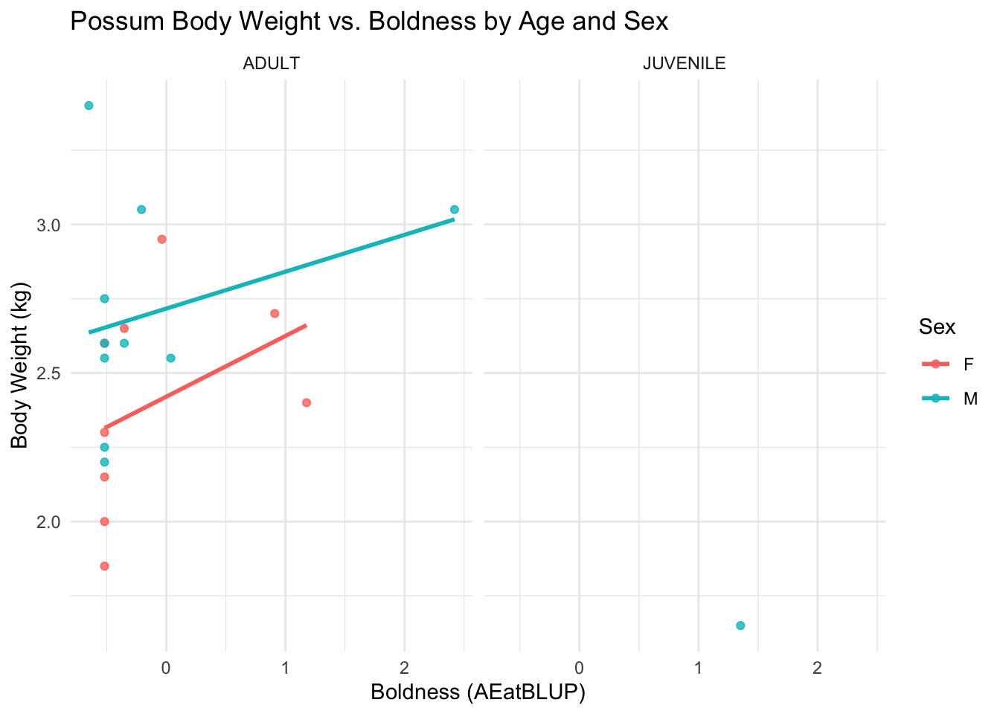
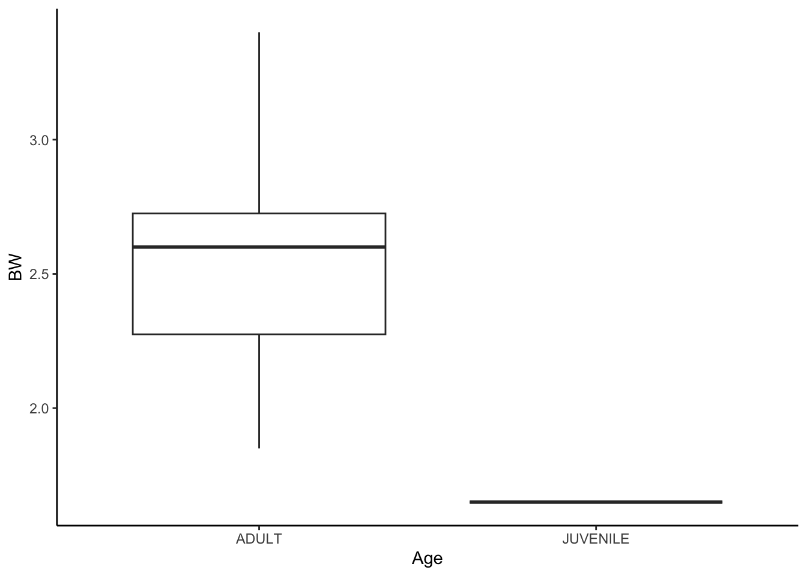

Week 1: Getting started
1 Introduction
Welcome to your very first BEDA practical. Today we will help you get started by giving you a free, physical lab notebook and making sure you have all the software you need for this unit.
1.1 Things to prepare
- Attend the first lecture (or watch the recording before the lab).
- Bring a laptop. If you need to borrow one, let us know, there are loaners available in the lab.
- Be ready to install software in the lab. Make sure your laptop has admin rights, internet access and enough space.
1.2 Learning outcomes
By the end of this session, you should be able to:
1.3 What we will cover today
We will explain to you how BEDA practicals work, what you will be doing, and how to get the most out of them. Your lecturer (probably Januar) will cover:
- Code of conduct and lab rules
- Lab and Handbook structure
- Demonstrators and how they can help you
- Attendance and feedback
2 Workshop
Each practical in Module 1 begins with a quick workshop. We will cover a key idea, then you will get stuck into some hands-on exercises in the lab. These are your chance to practise what you have heard in lectures and try out study design and data analysis for yourself.
Today’s workshop covers:
- An informal survey to assess statistical literacy
- A quick introduction to R, SPSS, and Jamovi
The workshop should take about 45 minutes unless Januar gets carried away. Hopefully one of you will keep him on track, but if not, a demonstrator will be there to remind him to wrap it up.
There are no formal exercises in this workshop, but you can ask questions and discuss the topics with your peers and demonstrators.
3 Exercise 1 – Cheatsheets
3.1 What is this about?
Let us start with cheatsheets – handy guides that help you remember important functions and commands. Pick one and have a go at following the tasks outlined in the cheatsheet. These cheatsheets are designed by Januar and are meant to reduce the stress of learning new software. They are not meant to be comprehensive, but they will help you get started.
3.2 Give a cheatsheet a try
You will need a web browser to open the cheatsheets. If you are reading this online, you can click here: Cheatsheets. This link is always available in the sidebar.
- You will see a list of cheatsheets. We will add more as we get your feedback and questions on Ed.
- Pick a cheatsheet – maybe something you have never used before, or one you know well to see if it helps you learn something new.
- Follow the steps on the cheatsheet. If you get stuck, do not panic! Ask your friends or a demonstrator, and feel free to give feedback so we can make the cheatsheets even better.
Tip
Now is your chance to try out different software for the same task. For example, try using R and Jamovi to plot the same data. You might find you prefer something different!
When you are done, please give us feedback on the cheatsheet(s) you tried. There is a quick form on the cheatsheets page – it only takes a minute and really helps us out! You may also request for new cheatsheets to be added – Januar will make them for you as you progress through the unit.x
Your feedback helps us make the cheatsheets better for everyone.
Want to help improve the cheatsheets? (Optional)
If you would like to go a step further and contribute to the cheatsheets, we would love your suggestions! You can:
- Email Januar with your ideas – that is totally fine!
- Post a comment on Ed. We will discuss and update the cheatsheets together.
- Submit a pull request on GitHub. This is a bit more technical, but if you know how, go for it! The link to the GitHub repo is on the cheatsheet.
If your changes are accepted, you will be credited as a co-author. Your work will be part of the unit’s resources, and you can even mention it on your CV or portfolio! Ask Januar if you want to know more.
You can suggest or contribute at any time during the semester, so do not stress if you are busy now. We will keep updating the cheatsheets regularly.
4 Exercise 2 – Introduction to statistical models
4.1 What is the point?
One of the most important parts of study design is being able to model data. One way to do this is with plots – they are not just pretty pictures, but actually capture the heart of your study design. In this exercise, you will get to grips with what a model is and how it helps you plan and analyse experiments.
4.1.1 What is a model?
A model is just a simple way to represent something complicated. In data analysis, a model helps us make sense of a dataset, test ideas (hypotheses), or make predictions. Models can be as simple or as fancy as you like, depending on your data and your research question.
Soon, you will be using what is called an empirical model. It might look like a scary equation, but you do not need to be a maths genius to get the idea.
Here is an example:
\[y = \beta_0 + \beta_1 x_1 + \epsilon\]
This just means: “the value of \(y\) is equal to a constant, plus \(x_1\) times another constant, plus a bit of random error.”
But we can make it even simpler by thinking of it as a relationship:
\[y \sim x_1\]
This means: “\(y\) is influenced by \(x_1\).”
So if \(y\) is weight and \(x_1\) is age, it is:
\[\text{weight} \sim \text{age}\]
In other words, “weight depends on age.”
4.1.2 Plots as models
For now, let us focus on graphical models – in other words, plots! Plots are models because they show relationships between variables. For example, you could plot the weight of an animal species against its age or height to see if there is a pattern:
Interestingly, how we consider your variables can drastically change the type of plot and model used for data analysis. For example, consider the same relationship as above, but plotted differently:

Notice how both plots show the same kind of relationship, but the way we interpret them – and the type of model we use – is different. This is what study design and data analysis are all about: the model you choose can totally change your results, so planning ahead is key!
Tip
If you can plot it, you are already modelling it!
4.2 What do you need?
- MS Excel (or similar) to look at the data files
- Word, Google Docs, or just pen and paper to sketch your models
- R, Jamovi, SPSS, or any software you fancy for plotting
- Data: penguins.csv and possum.xlsx (grab them from Canvas)
4.3 What do you do?
Step 1. Download and have a look at the data: penguins.csv and possum.xlsx.
Step 2. Pick out some variables from the data and think about how you could model them. You do not need to analyse the data in detail – just focus on what the variables are and how they could be modelled. Try these:
- Histogram – shows the distribution of a variable. Think: what kind of data would make a histogram skewed to the right?
- Scatterplot – shows the relationship between two variables.
- Boxplot – compares two or more groups.
- Barplot – compares groups, but with error bars. Think: what do the error bars mean? Why might you pick a barplot over a boxplot?
Step 3. For plots that compare two or more variables, think about how you could change the way you collect data to use a different model. Is your idea logical and doable?
Step 4. These plots are linked to specific empirical models and statistical analyses, which we will cover soon. Can you guess what kind of statistical model you would use for the data in Steps 1 and 2? Do not worry if you are not sure yet – chat about it with your friends and demonstrators.
You should hand-draw your models on your new notebook for future reference.
Example
- Open the possum data in Excel. Let’s think about how the weight of a possum changes with age.
- What kind of variables are these? Are they continuous, categorical, or something else? With that in mind, sketch the plot(s) you think will help you understand the data. Weight is continuous and age is categorical, so a boxplot is a good start.
- What if you collected age in years instead of categories? Then you could use a scatterplot. But maybe you can’t tell a possum’s exact age, so that might not be practical.
- The first model would probably use a two-sample t-test, while the second could use linear regression.
A model comparing the weights of juvenile and adult possums could be shown as a boxplot or barplot. Here’s a boxplot of the possum data:
Code
library(readxl)
possums <- read_excel("possums.xlsx", sheet = 2)
library(ggplot2)
ggplot(possums, aes(x = Age, y = BW)) +
geom_boxplot() +
theme_classic()
See how thinking about how to interpret the data is a big part of study design? It helps you decide what data to collect and how to analyse it. But notice – there is only one juvenile possum in the dataset, so you could not really analyse this properly!
Food for thought: Can age still be used to construct a model given that there is only one juvenile possum?
5 That is a wrap!
That is all for today! If you have any questions, just ask your demonstrators – they are here to help. Do not forget to give feedback on the cheatsheets and have a go at the exercises in your own time. See you next week for more on study design and data analysis!
6 Take-home exercises
These exercises are not mandatory but will help you get the most out of today’s practical by testinng your knowledge and understanding of what you have learned today.